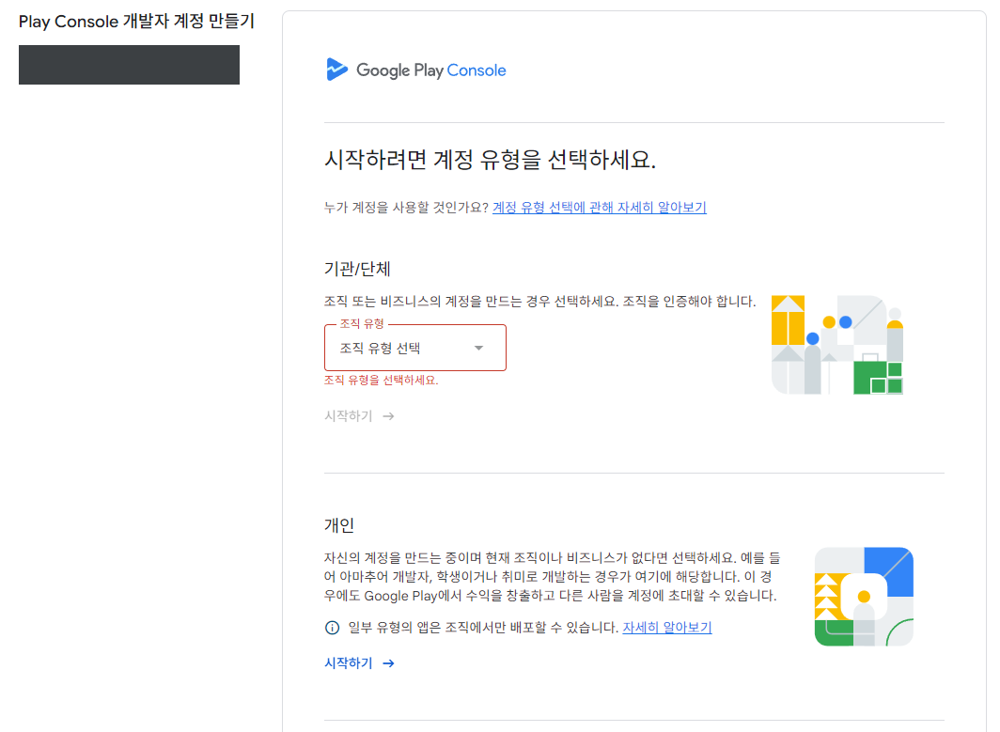
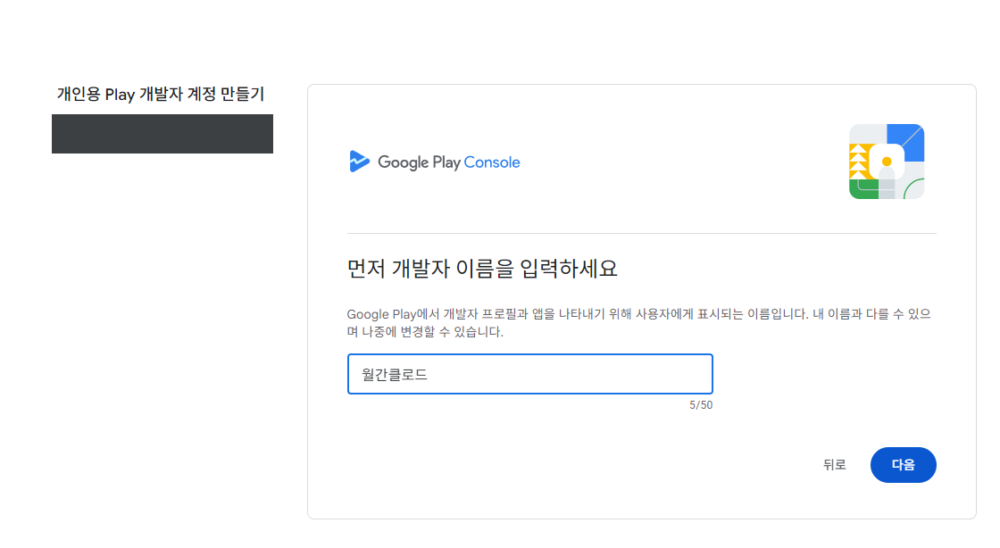
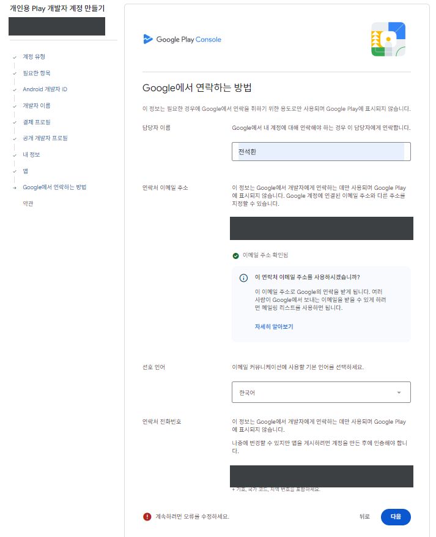
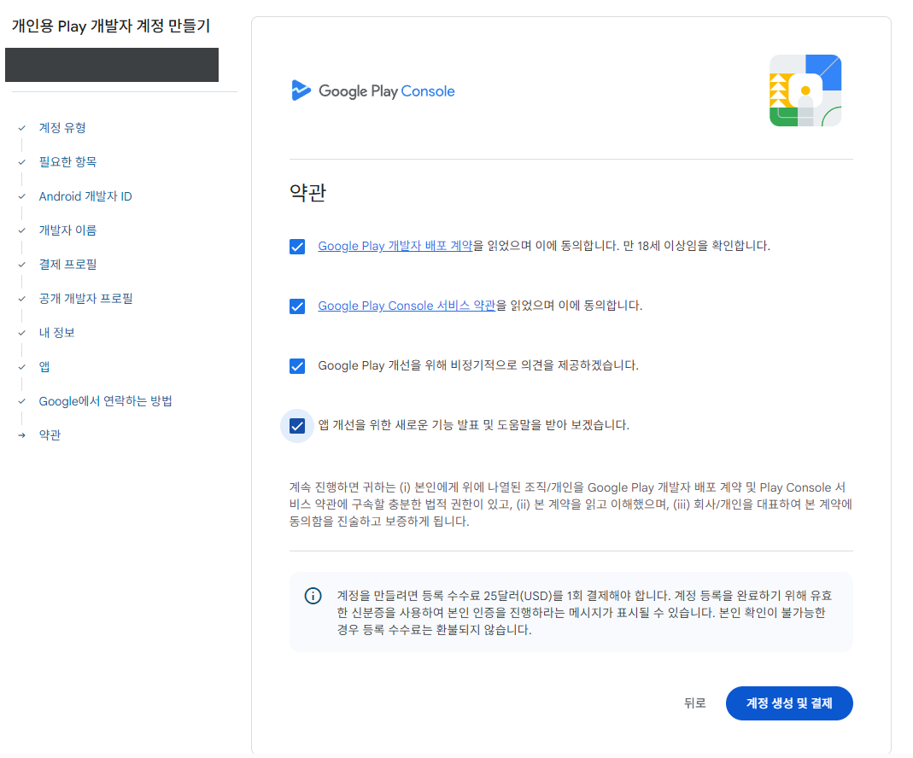
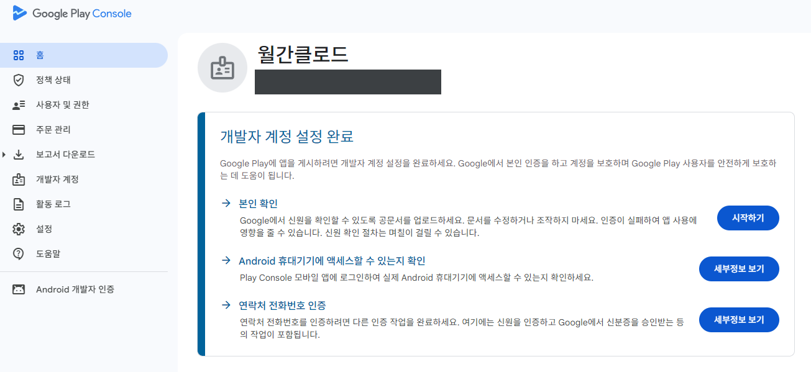
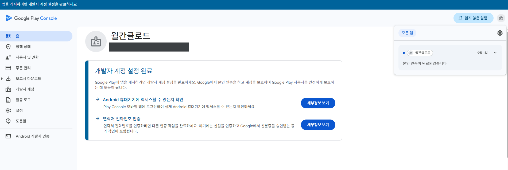

혼자 설치하다 막히면 하루가 날아가지만, 같이 하면 한 시간이면 끝납니다. 다만 딱 하나, 구글 플레이 개발자 계정만은 이 세션 전에 신청해 두셔야 합니다.
등록비 $25(1회). play.google.com/console/signup ↗ 에서 시작합니다.
D-U-N-S라는 9자리 사업체 식별번호가 필수인데, 국내 소규모 사업자는 대부분 갖고 있지 않습니다. 무료지만 발급에 며칠~2주가 걸리고, 그 뒤에 구글이 조직 인증을 또 합니다. 두 단계가 순서대로 붙어 개강까지 빠듯합니다.

+82 010…처럼 0을 남긴 경우입니다.



+82 010…처럼 0을 남긴 경우입니다. 앞자리 0을 빼고 +82 10…으로 다시 넣으세요.온라인 1시간. 날짜는 사전 설문에서 받은 시간대를 모아 정하고 카톡방에 공지합니다.